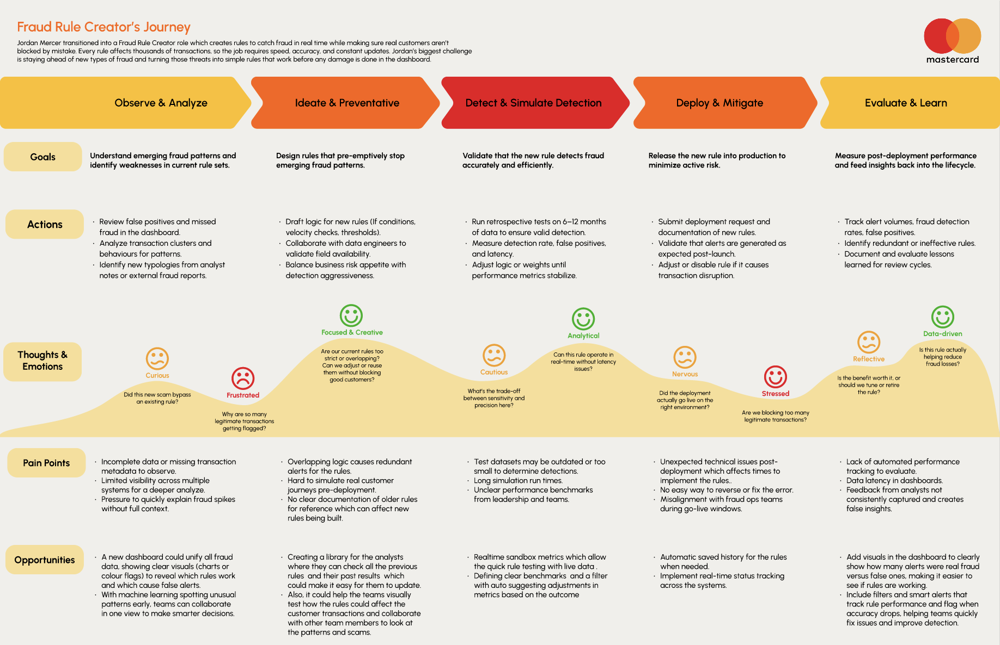
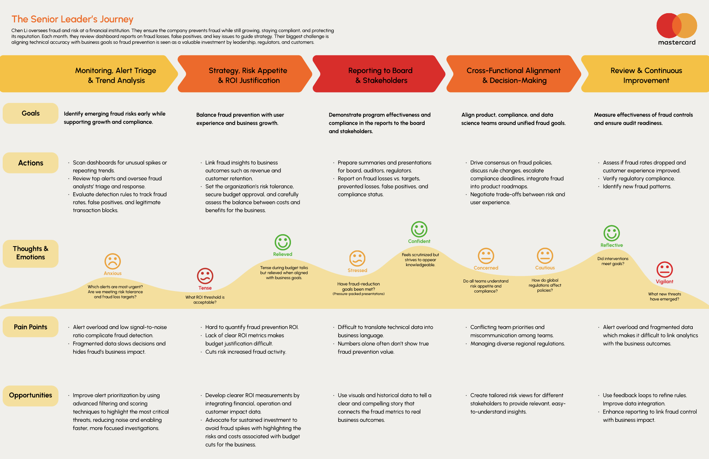
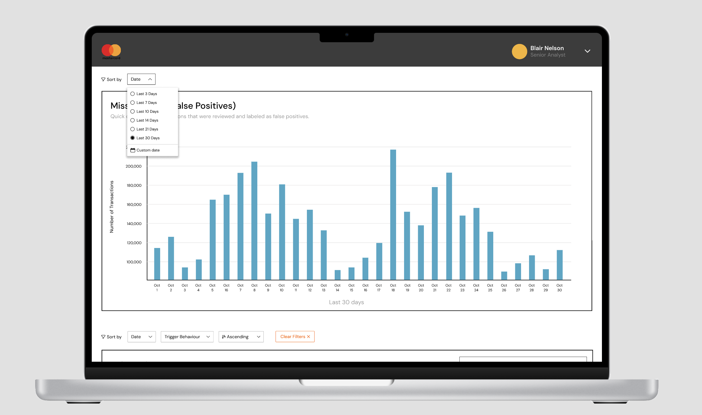
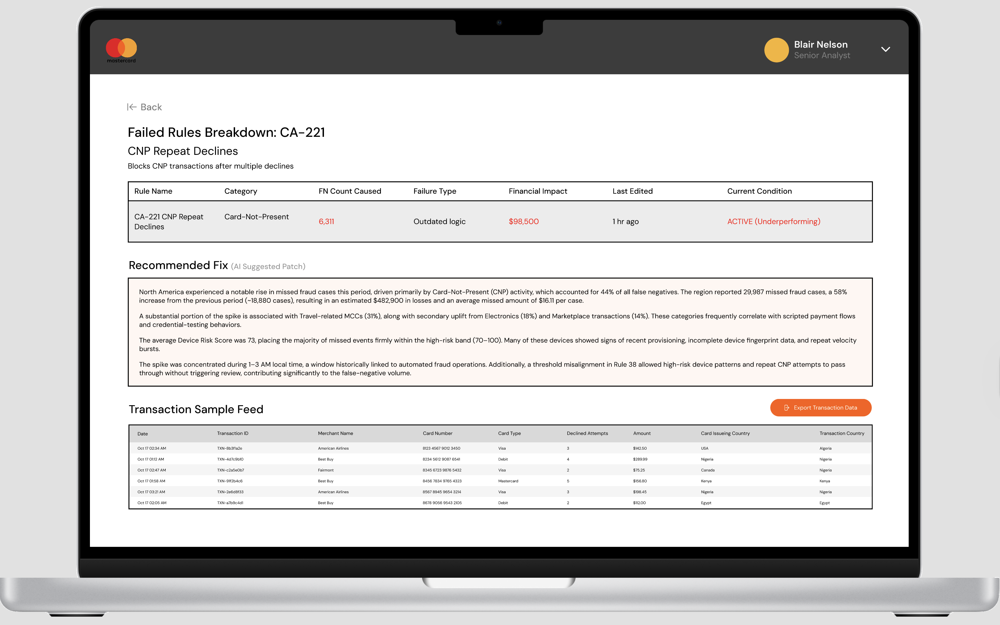
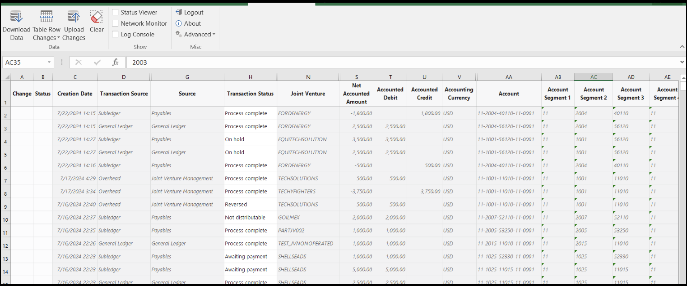

Transforming complex fraud data into actionable insights — supporting faster, clearer, and more confident fraud investigations.
60%
Less analysis time
Post-redesign
50+
Rules trackable
All in one view
3
Key personas
From my interviews
6
Analyst interviews
Run by me, weekly
Timeline
4 months
My Role
Lead Researcher Comms Co-Lead
Team
5 members
Tools
Figma, User Research Data Visualisation
0
Overview
The Problem
Mastercard's fraud dashboard relied on dense data tables and fragmented views — making it difficult to spot trends, assess performance, and prioritise investigations.
Dense tables
No visual patterns
Critical fraud signals buried in rows and columns — analysts had to manually scroll and mentally reconstruct trends
Fragmented
Scattered across tabs
Information split across multiple views, forcing constant context-switching and loss of the bigger picture
No context
Spikes unexplained
When fraud spikes occurred, analysts had no immediate reason why — leading to uncertainty and delayed responses
50+
Rules, no overview
With 50+ detection rules running simultaneously, there was no way to compare performance or see which needed attention
Design Goals
Improve data accuracy
Detect and reduce false positives that overwhelm analysts and erode trust in the system.
Flexible data interpretation
Alerts must be comparable, well-documented, and audit-ready across teams.
Protect customers and merchants
Showing direct fraud impact helps analysts connect data to real-world consequences.
Improve team collaboration
Shared knowledge and visibility across teams reduces risk and improves detection rates.
As Lead Researcher and Communication Co-Lead, I owned the end of the process that turns ambiguous user needs into clear design decisions.
Lead Researcher
Conducted weekly stakeholder interviews with Mastercard's fraud analyst team. Created journey maps for Jordan and Chen. Led user workshops to validate design concepts.
Communication Co-Lead
Facilitated weekly syncs with Mastercard's Product Design team. Presented research findings and design iterations. Documented decisions and coordinated cross-functional collaboration.
Design Contributions
Co-designed the Visual Insider dashboard concept. Created wireframes and prototypes for testing. Developed the data visualisation strategy for fraud metrics.
2
User Personas
Three Users, Three Different Needs
I ran the six analyst interviews these personas came out of. We shaped the three profiles together as a team — each one a different relationship to the dashboard.
J
Jordan Mercer
Fraud Rule Creator
"Every rule I write could protect thousands or block the wrong user."
Goals
Prevent new types of fraud
Limit friction for legitimate customers
Test rules in a safe environment
Frustrations
Hard to predict rule behaviour in real scenarios
Complex audit processes and limited visibility
B
Blair Nelson
Senior Fraud Analyst
"Every rule must be designed given small oversights can cost millions."
Goals
Maintain fraud defenses to minimise losses
Ensure detection complies with legal standards
Advise junior analysts, promote collaboration
Frustrations
Legacy systems causing workflow delays
Fragmented dashboards limiting team collaboration
C
Chen Li
Senior Executive
"Fraud down 10% isn't enough — every investment must be justified."
Goals
Lower fraud losses without harming customer experience
Keep fraud strategies ahead of industry trends
Frustrations
Rule data disconnected from business-level impact
High-value dashboards causing panic in teams
3
Potential Directions
Three Directions We Explored
We evaluated three distinct design directions before converging on the one that served all three personas most effectively.
Direction A
Safe Sandbox & Simulation
Enable safe, real-time rule testing in a secure sandbox. Addresses Jordan's need for side-by-side comparison and bulk scoring simulations before go-live.
Chosen Direction
Fraud Impact Dashboard
Connect fraud rule performance to business outcomes and ROI. Translates metrics into money saved, shows timeline vs industry benchmarks, and provides storytelling visuals around rule deployment.
Direction C
Compliance & Audit Assistant
Automate audit readiness and documentation. Addresses Blair's pain around audit prep — auto-generated reports, real-time compliance scoring, and evidence library.
We chose the Fraud Impact Dashboard because it was the only direction that served all three personas at once — Jordan's testing needs, Blair's audit trail, and Chen's business case.
— Team decision, week 6
4
Journey Mapping
Jordan's Workflow
I mapped two journeys — Jordan's rule-creation process and Chen's executive view — because the same dashboard has to answer two very different questions.
01
Observe & Analyse
Understand emerging fraud patterns and identify weaknesses in current rule sets.
02
Ideate & Preventative
Design rules that pre-emptively stop emerging fraud patterns before they scale.
03
Detect & Simulate
Validate that the new rule detects fraud accurately and efficiently without false positives.
04
Deploy & Mitigate
Release the new rule into production to minimise active risk across transactions.
05
Evaluate & Learn
Measure post-deployment performance and feed insights back into the lifecycle.

Jordan's journey mapI built this from the analyst interviews — rule creation, end to end
My work Team
1
Mine — research synthesisThe five stages came from how Jordan described the work in interviews, not from a template — which is why "Ideate & Preventative" sits before detection rather than after.
2
Mine — friction pointDetect & Simulate is where analysts told me the process stalled. Marking it here is what pointed the team at rule-testing as a design opportunity.
3
Mine — the loopEvaluate feeds back into Observe. Drawing the cycle closed is what made the case for post-deployment metrics in the final dashboard.
The Executive View

Chen Li's journey map — the executive path through the same system. Click to enlarge.
5
Design Workshop
Testing With Real Scenarios
I designed and facilitated the peer test workshops, where participants role-played as fraud analysts — using game mechanics to surface real usability insights.
Workshop Activities
Eye Doctor Game
Participants compared visual designs to identify which presented risk signals more effectively — surfacing clarity and hierarchy issues.
Murder Mystery Game
Teams analysed mock customer data to uncover fraudulent accounts — directly testing pattern recognition abilities in realistic conditions.
Dashboard Creation
Participants designed their ideal fraud detection dashboard with pen and paper — revealing mental models and priority hierarchies.
Key Insights from Testing
Clarity over density
Participants strongly preferred clearer, labelled designs — readability directly increased perceived trustworthiness of the data.
Key metrics must be prominent
Transaction spikes, total value, and pattern indicators need to be immediately visible — not buried below the fold.
Context is non-negotiable
Legends, consistent scales, and regional context were specifically requested — data without context caused confusion and distrust.
One-click drill-downs
Participants wanted to go deeper without leaving the main view — progressive disclosure, not navigation away.
Revisions Identified
Before
Charts without regional or time context
→
After
Contextual data (regions, times, labels) added to all comparison charts
Before
Free-form dashboard layout causing confusion
→
After
Structured dashboard components with guided layout and pre-made visual examples
6
Design Solution
The Redesigned Dashboard
Three interconnected views — each solving a specific part of the analysts' workflow.
Main Dashboard OverviewFraud trends, geographic patterns, merchant activity and rule performance in one view
My work Team
1
Mine — research → layoutThe metrics that sit above the fold are the ones analysts named first in interviews. Everything they mentioned second went below.
2
Mine — data viz strategyTime and region labels on every comparison chart. Workshop testing showed unlabelled charts read as untrustworthy, not just unclear.
3
TeamBuilt by the team from the direction we chose together.
Rule Performance AnalyticsAll 50+ fraud rules in one comparable view
My work Team
1
TeamThe dot chart itself was a teammate's design.
2
Mine — from Chen's needsSeverity encoding. Chen needed rule data to ladder up to business impact, so severity had to be readable without opening a single rule.
AI-Powered Spike ExplanationsContext for every anomaly, in place
My work Team
1
Mine — the insight behind it"Spikes with no explanation" was the single most repeated complaint in my interviews. This panel exists because of that finding.
2
TeamExplanation logic and copy model developed with the team.
Detail Views

Unified date filtering — set the range once, every chart follows.

Rule detail — the explanation engine and the evidence behind it.
Key Features
Main Dashboard
Centralised overview with fraud trends, geographic patterns, merchant activity, and rule performance all in one view.
Rule-Specific Pages
Dedicated views for each of the 50+ fraud rules with detailed metrics and transaction samples.
Spike Explanation Engine
AI-generated insights that explain sudden changes in fraud activity — the "why" behind every anomaly.
Unified Date Filtering
Global time controls with chart-specific refinement — one system for the entire dashboard.
Visual Hierarchy
Colour-coded severity indicators and progressive disclosure of complex information.
Export Capabilities
One-click report generation for stakeholder communication and audit documentation.
7
Problems Solved
Six Problems, Six Solutions
Every design decision mapped directly back to a specific, research-validated pain point.
Problem
Critical patterns buried in endless rows and columns
→
Solution
Interactive charts and visual representations that highlight patterns instantly
Problem
Information scattered across multiple tabs and views
→
Solution
Centralised dashboard with all critical information in one view
Problem
Technical jargon creating cognitive friction and slowing decisions
→
Solution
Plain language labels with contextual tooltips for clarity
Problem
50+ rules with no way to compare or prioritise
→
Solution
Interactive dot chart showing all rules at once with sorting and filtering
Problem
Fraud spikes with no immediate explanation
→
Solution
AI-powered explanations providing context for every spike automatically
Problem
Overly complex filter systems slowing investigation setup
→
Solution
Unified date controls with quick presets and custom ranges
8
Before & After
The Transformation
From a cluttered table view to a clear, hierarchical dashboard that surfaces the right information at the right time.

Before — cluttered, low clarity
After — clear hierarchy + context
9
Impact & Results
Measured Outcomes
Validated through testing with the same fraud analyst team who informed the research.
60%
Less time interpreting data
Analysts spend more time on strategic fraud prevention, less on manual comparison
Faster
Pattern recognition speed
Visual comparison across time periods replaced manual side-by-side analysis
Higher
Decision confidence
Context provided for anomalies increased analysts' confidence in their investigation conclusions
Improved
Team collaboration
Clear, exportable visualisations improved cross-team communication and shared knowledge
"The new dashboard completely transformed how we work. What used to take hours of manual comparison now takes minutes. The AI explanations give us confidence in our decisions."
— Senior Fraud Analyst, Mastercard
10
Reflection
What I Learned
Enterprise dashboard design in a high-stakes environment taught me things no other project type could.
Context is king
Data without context leads to confusion and delayed decisions. Providing the "why" behind metrics is as important as the metrics themselves — especially in fraud detection where wrong calls have real consequences.
Progressive disclosure
In complex systems, showing everything at once overwhelms users. Layering information through interaction creates clarity — the overview should earn the drill-down, not replace it.
Test with real scenarios
Workshop activities that simulate actual work tasks reveal insights that interviews alone cannot. The Murder Mystery game surfaced pattern recognition issues we'd never have found in a standard usability test.
Visual hierarchy is a design decision
Colour, size, and position guide attention. In a dashboard where every metric competes for focus, strategic visual hierarchy is the difference between a tool and a liability.
The biggest insight was that clarity is a form of trust. When analysts can see not just what is happening but why, they stop second-guessing the tool and start using it to do their best work.